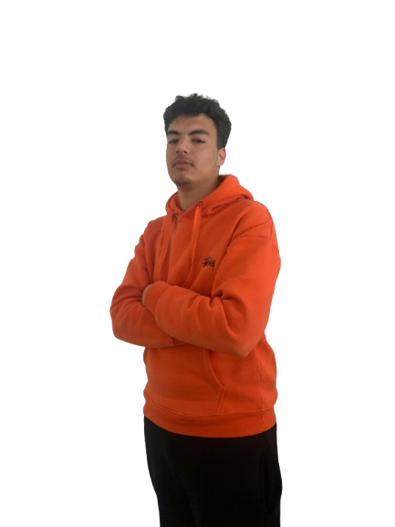
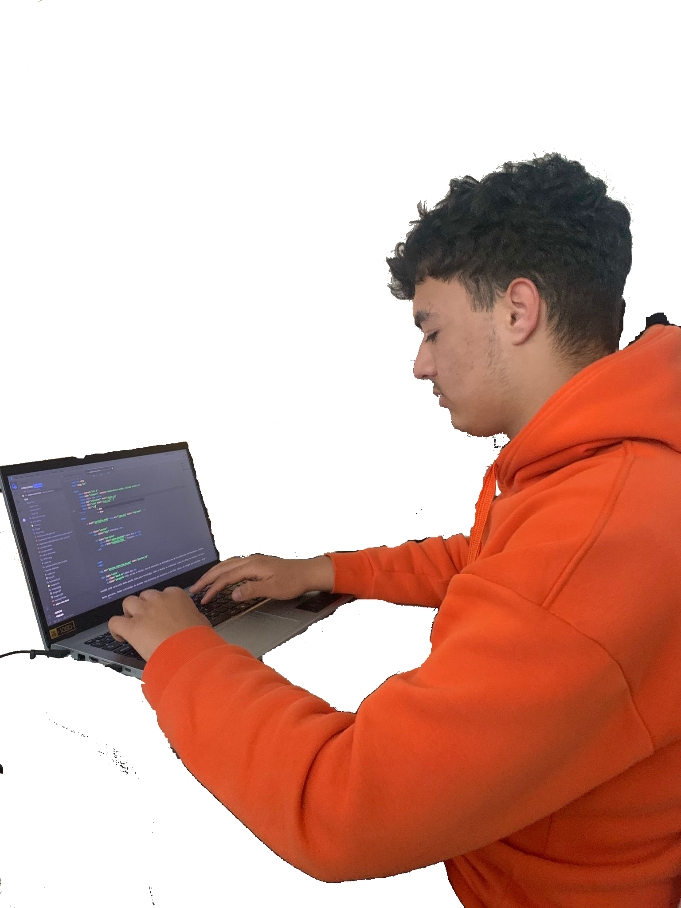

Chamo-me Yassine Boumhidi. Sou do Liceu, Agrupameno de Escolas João de Deus do 10ºANO de Multimédia. eu amo a programação é um mundo aonde eu me sinto que eu sou o yassine verdadeiro!. tambem gosto de animacao em animate e em blender eu me sinto um designer gosto imenso do Som e mexer em musica gosto de editar em photoahop capcut.
eu sou uma pessoa que se dedica bastante na programaçao faço o meu dever na sala e fora. eu dedico horas e horas para criar um site que seja do meu conhecimento em termos de codigo e de logica. eu dependo 100% de mim. eu dedico horas em criar e editar som e animaçao.
Eu sendo iniciante confio que as minhas habilidades de pensamento e de codigo estao em termos de logica estao desenvolvidos em termos de trabalhs em HTML e CSS. eu tambem desfruto de editar videos e fotos. gosto imenso de som'(musica'), e mexer em blender a nivel de entender as animações
eu sou uma pessoa que em termos de perfil professional, gosto de trabalhar sozinho. gosto de realizar tudo em um periodo defenido. eu desfruto da area de SPW, IS e CM na minha opinão são areas que ter preparam te mentalmente para sair do buraco.